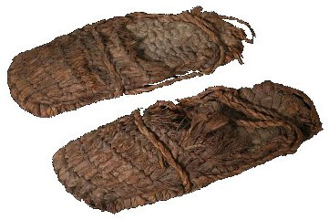

HISTÓRIA
A criação do sapato se deu como uma conseqüência natural da necessidade que o homem sentiu em proteger seus pés do incomodo de andar sobre pedras e sujeira ou do perigo de pisar em algum animal peçonhento. Os primeiros sapatos de que se tem notícia apareceram na Mesopotâmia e no Egito, 5 mil anos antes de Cristo. Eram sandálias feitas de fibras vegetais e couro e nem todo mundo podia usa-las: eram exclusividade dos soberanos sumérios, assírios, babilônicos, cretenses e egípcios. Existem evidências que a história do sapato começa a partir de 10 mil a.C., ou seja, no final do Paleolítico, pois pinturas desta época, em cavernas na Espanha e no sul da França, fazem referência ao calçado.